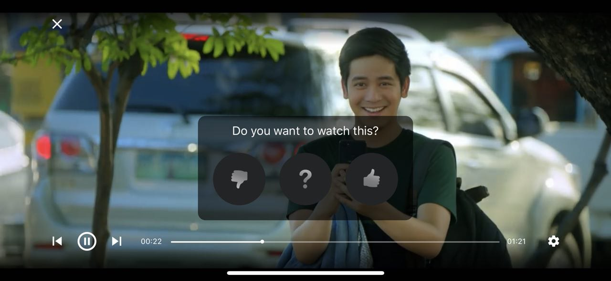

Voted trailers feed integration Reference
Voted trailers feed integration Reference
Voted trailers feed integration
TVVotedTrailersFeedViewController is a class responsible for fetching and displaying the voted trailers feed which contains trailers the user has previously rated. SDK provides a simple and convenient way for embedding the feed into your app’s UI.
Instantiate the view controller by calling the -[TVTrailerVoteFactory votedTrailersFeedViewControllerEmbeddedInParentViewController:parentView:] method of the main factory class:
let votedTrailersFeedVC = TVTrailerVoteFactory.shared().votedTrailersFeedViewControllerEmbedded(
inParentViewController: self,
parentView: votedTrailersFeedContainerView
)
parentViewController is a UIViewController instance that will be used as a parent for the voted trailers feed view controller, parentView is a UIView that you wish to embed the feed content into. The voted trailers feed view controller will automatically set all neccessary constraints so you only need to layout your container view:
When using storyboards, you can simply create a UIView wrapper, create an IBOutlet for it and instantiate the voted trailers feed view controller in your viewDidLoad method:
@IBOutlet weak var votedTrailersFeedContainerView: UIView!
override func viewDidLoad() {
super.viewDidLoad()
let votedTrailersFeedVC = TVTrailerVoteFactory.shared().votedTrailersFeedViewControllerEmbedded(
inParentViewController: self,
parentView: votedTrailersFeedContainerView
)
}
When instantiated, the voted trailers feed view controller will automatically fetch and display the feed. To force a feed reload, call the -[TVVotedTrailersFeedViewController reloadFeed] method.
At the top of the feed there’s a header view that allows the user to filter previosly rated trailers by the type of vote (All, Yes, No or Maybe):
When a trailer cell is tapped, a fullscreen video player is presented automatically:
